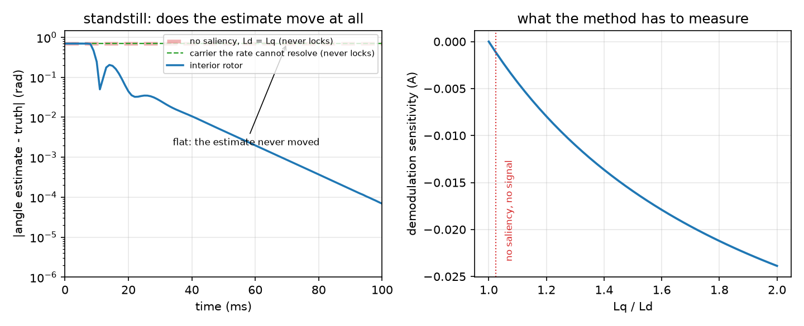

1.1.3. Zero and low speed
The task: produce torque with no back EMF to observe, and find out before the commissioning session whether this machine can be observed at standstill at all.
1.1.3.1. What you need
foc/core/observer/hfi_observer.hpp-- saliency tracking by high-frequency injection: the carrier, the demodulator, the PLL, and the two refusals.foc/core/observer/dual_inductance_observer.hpp-- the same flux integrator with the angle recovered from two inductances instead of one. It needs no injection, and on a machine with equal inductances it degenerates to the single-inductance answer -- so it is not a way around the first failure mode below, it is a way to stop paying the bias that a single inductance brings.foc/core/observer/blended_observer.hpp-- the hand-over between the two as speed rises, so the page does not end at the point where the low-speed method stops working.
1.1.3.2. A minimal program
docs/doxygen/dox/demos/low-speed-injection.cxx holds a salient machine at
standstill, drives it with the observer's own injection, and runs the loop three
times: a surface-mount rotor, an interior rotor, and an interior rotor observed
by a controller that cannot resolve the carrier. The same file produces this
page's figure.
1// Low speed -- zero and low speed: high-frequency injection, and the machines it
2// refuses to work on.
3//
4// Build it the way the `demo` gate does -- the example calls into the library, so the
5// sources are part of the command, and `-Iinclude` alone fails at the link. A renamed
6// source turns that gate red instead of leaving a stale instruction here:
7// g++ -std=c++17 -fno-exceptions -fno-rtti -Wall -Wextra -Werror -Iinclude
8// docs/doxygen/dox/demos/low-speed-injection.cxx src/core/*.cpp
9// src/core/observer/*.cpp src/motor/*.cpp src/driver/*.cpp src/api/foc_api.c
10// src/api/bridge.cpp src/version.c
11// -o /tmp/low-speed-injection
12//
13// With `--csv <path>` it writes both sweeps as rows; `docs/demos/make_figures.py`
14// draws this example's figure from that file.
15//
16// 低速 —— 零速与低速：高频注入，以及它拒绝在哪些机器上工作。
17
18#include <cmath>
19#include <cstdio>
20#include <cstring>
21
22#include <foc/core/observer/hfi_observer.hpp>
23#include <foc/core/types.hpp>
24
25namespace {
26
27constexpr float kTwoPi = 6.28318530718F;
28
29// A standstill salient machine, small enough to read: two axes, no back EMF, no
30// saturation. `lq_ratio == 1` is a surface-mount rotor -- the case this example is
31// about.
32// 一台静止的凸极电机，小到能一眼读完：两个轴、没有反电动势、没有饱和。
33// `lq_ratio == 1` 就是表贴式转子——本示例要讲的就是这一种。
34struct SalientPlant final {
35 float rs_ohm = 1.0F;
36 float ld_h = 0.010F;
37 float lq_h = 0.010F;
38 float theta_rad = 0.7F; // where the rotor happens to be
39 float i_alpha_a = 0.0F;
40 float i_beta_a = 0.0F;
41
42 void step(const foc::core::Ab<float>& v_ab, float dt_s) noexcept {
43 const float c = std::cos(theta_rad);
44 const float s = std::sin(theta_rad);
45 const float v_d = (v_ab.alpha * c) + (v_ab.beta * s);
46 const float v_q = (v_ab.beta * c) - (v_ab.alpha * s);
47 const float i_d = (i_alpha_a * c) + (i_beta_a * s);
48 const float i_q = (i_beta_a * c) - (i_alpha_a * s);
49 const float i_d_next = i_d + (dt_s * (v_d - (rs_ohm * i_d)) / ld_h);
50 const float i_q_next = i_q + (dt_s * (v_q - (rs_ohm * i_q)) / lq_h);
51 i_alpha_a = (i_d_next * c) - (i_q_next * s);
52 i_beta_a = (i_d_next * s) + (i_q_next * c);
53 }
54};
55
56struct RunResult final {
57 bool configured = false;
58 bool locked_at_end = false;
59 float final_angle_error_rad = 0.0F;
60 float final_hf_current_a = 0.0F;
61};
62
63} // namespace
64
65auto main(int argc, char **argv) -> int {
66 const char *csv_path = nullptr;
67 if (argc == 3 && std::strcmp(argv[1], "--csv") == 0) {
68 csv_path = argv[2];
69 } else if (argc != 1) {
70 std::fprintf(stderr, "usage: %s [--csv <path>]\n", argv[0]);
71 return 2;
72 }
73
74 FILE *csv = nullptr;
75 if (csv_path != nullptr) {
76 csv = std::fopen(csv_path, "w");
77 if (csv == nullptr) {
78 std::perror("fopen");
79 return 1;
80 }
81 std::fprintf(csv, "kind,x,value,flag\n");
82 }
83
84 constexpr float kInjectV = 12.0F;
85 constexpr float kInjectHz = 2000.0F;
86 constexpr float kControlHz = 20000.0F;
87 constexpr float kDt = 1.0F / kControlHz;
88 constexpr int kSteps = 20000; // one second
89 constexpr int kLogEvery = 20; // 1 ms
90
91 // Three runs that between them answer this example's question. The first is a
92 // surface-mount rotor, the second an interior one, and the third is an interior
93 // rotor observed by a controller that cannot resolve the carrier.
94 // 三次运行合起来回答本示例的问题。第一次是表贴式转子，第二次是内置式，第三次是内置式
95 // 转子，但控制器分辨不了这个载波。
96 struct Case final {
97 const char *name;
98 float lq_ratio;
99 float dt_s;
100 const char *colour; // for the reader, not for the program
101 };
102 const Case cases[] = {
103 {"spm", 1.0F, kDt, "never locks"},
104 {"ipm", 1.4F, kDt, "locks"},
105 {"slow-control", 1.4F, 1.0F / 3000.0F, "refused"},
106 };
107
108 std::printf("HFI at %.0f V / %.0f Hz, control %.0f Hz; max carrier this rate resolves: %.0f Hz\n",
109 static_cast<double>(kInjectV), static_cast<double>(kInjectHz), static_cast<double>(kControlHz),
110 static_cast<double>(foc::core::HfiObserver::max_inject_hz(kControlHz)));
111 std::printf("%-14s %8s %10s %10s %8s %8s %6s\n", "case", "Lq/Ld", "gain (A)", "locks", "err (rad)",
112 "|dtheta|", "status");
113
114 float surface_mount_error_rad = 0.0F;
115 for (const Case &test : cases) {
116 SalientPlant plant;
117 plant.lq_h = plant.ld_h * test.lq_ratio;
118 const float gain = foc::core::HfiObserver::predicted_gain_a(kInjectV, kInjectHz, plant.ld_h, plant.lq_h);
119 foc::core::HfiObserver observer(foc::core::HfiObserver::Config{kInjectV, kInjectHz, 100.0F, 200.0F,
120 20.0F, 0.9F, 0.0F, gain, 0.001F});
121 RunResult result;
122 result.configured = observer.status() == foc::ErrorCode::Ok;
123
124 // The estimate is what `update()` publishes; the truth is where the rotor
125 // is. Keeping both is the whole point -- the observer's own `error()` is not
126 // the angle error, it is the demodulator's residual.
127 // 估计是 `update()` 发布的东西；真值是转子实际所在。两个都留着才是要点——观测器自己的
128 // `error()` 不是角度误差，而是解调器的残差。
129 for (int step = 0; step < kSteps; ++step) {
130 const foc::core::Ab<float> injection = observer.injection_ab();
131 plant.step(injection, test.dt_s);
132 const foc::core::ObsState state =
133 observer.update(injection, foc::core::Ab<float>{plant.i_alpha_a, plant.i_beta_a}, test.dt_s);
134 const float angle_error = std::fabs(std::remainder(state.theta_e - plant.theta_rad, kTwoPi));
135 if ((step % kLogEvery) == 0 && csv != nullptr) {
136 std::fprintf(csv, "%s,%.4f,%.6f,%d\n", test.name, 1000.0F * static_cast<float>(step) * test.dt_s,
137 static_cast<double>(angle_error), observer.locked() ? 1 : 0);
138 }
139 result.final_angle_error_rad = angle_error;
140 result.final_hf_current_a = observer.hf_current_a();
141 result.locked_at_end = observer.locked();
142 }
143
144 std::printf("%-14s %8.2f %10.5f %10d %10.5f %8.5f %6d\n", test.name, static_cast<double>(test.lq_ratio),
145 static_cast<double>(gain), result.locked_at_end ? 1 : 0,
146 static_cast<double>(observer.error()), static_cast<double>(result.final_angle_error_rad),
147 static_cast<int>(observer.status()));
148 if (test.lq_ratio == 1.0F) {
149 surface_mount_error_rad = result.final_angle_error_rad;
150 }
151 }
152
153 // The sensitivity itself, over the whole range: it is zero at ratio one, and a
154 // zero is not a small number to be tuned around -- it is the statement that
155 // this method has nothing to measure.
156 // 灵敏度在整段上的取值：比值等于一时它是零，而零不是一个可以调参绕过的小数——它说的是
157 // 这个方法没有东西可测。
158 for (int step = 0; step <= 40; ++step) {
159 const float ratio = 1.0F + (0.025F * static_cast<float>(step));
160 const float gain = foc::core::HfiObserver::predicted_gain_a(kInjectV, kInjectHz, 0.010F, 0.010F * ratio);
161 if (csv != nullptr) {
162 std::fprintf(csv, "gain,%.4f,%.6f,0\n", static_cast<double>(ratio), static_cast<double>(gain));
163 } else if ((step % 5) == 0) {
164 std::printf(" Lq/Ld %.3f -> sensitivity %+.5f A\n", static_cast<double>(ratio),
165 static_cast<double>(gain));
166 }
167 }
168
169 if (csv != nullptr) {
170 std::fclose(csv);
171 std::printf("wrote %s\n", csv_path);
172 return 0;
173 }
174
175 std::printf("\nthe surface-mount run ends %.3f rad away from the truth and reports locked=0, error=0:\n"
176 "a zero error signal is what a perfect lock looks like *and* what no signal at all looks like\n",
177 static_cast<double>(surface_mount_error_rad));
178 return 0;
179}
1.1.3.3. Where the numbers come from
The demodulation sensitivity is not a tuning knob:
predicted_gain_a()computes it from the injection amplitude, the carrier frequency and the machine's two inductances. Taking it from the machine is what turns "HFI does not work here" into a number that is zero for a reason.The carrier frequency is bounded above by the control rate -- the library's
max_inject_hz()is the bound, and it is a ratio of samples per carrier rather than a frequency, so it moves with your ISR period.The injection amplitude is a trade with a formula: a carrier that another observer cannot distinguish from back EMF leaves a flux residue of
inject_v / (2*pi*inject_hz)behind, because an integrator has no reset.The current high-pass is set above the highest electrical frequency HFI is meant to work at and well below the carrier, because the demodulator multiplies by the carrier and anything DC in the current leaks straight through it.
1.1.3.4. How it goes wrong
A surface-mount rotor attempted anyway. The sensitivity is exactly zero, so there is nothing to demodulate; the configuration is refused rather than run. The figure's left panel is what "attempted anyway" looks like: the estimate never moves, and it never moves for the whole window rather than converging late.
The error output read as the angle error.
error()is the demodulator's residual, and it is zero both when the lock is perfect and when there is no signal at all -- the two cases a start-up most needs to tell apart.locked()is the answer; the example prints both next to the true angle error so the difference is visible rather than described.A carrier the control rate cannot resolve. Past the boundary the amplitude collapses, the lock drops out, the angle freezes and the speed reads zero: a loop closing on that runs away with nothing reported as a fault.
update()refuses the configuration instead, which is why the example's third run reports a status rather than a wrong answer.A load step at standstill. The dc content it puts into the current reaches the demodulator and becomes a standing bias in the error signal -- enough, at the wrong amplitude, to push a start-up across the half-turn boundary and lock the estimate to the mirror image of the rotor.
A second observer left running alongside. A back-EMF flux integrator cannot tell the carrier from real back EMF, and it has no reset: whatever the carrier deposits stays. The residue is computable from the carrier alone, so the amplitude is chosen against it before the run, not after.
1.1.3.5. Evidence
Two claim rows cover this page -- foc/core/observer/hfi_observer.hpp and
foc/core/observer/dual_inductance_observer.hpp -- and the level this page may
state is the minimum of those two. Every measured number this page would
otherwise want to quote -- the angle bias the residue leaves, the carrier ratio
at which the lock fails, the bias a load step injects, the speed a runaway loop
settles at -- lives in the header's own measured notes and in those claim rows.
What this page does not claim: that injection is a way to observe a machine that has no saliency, that a carrier above what the control rate can resolve is recoverable by lowering the amplitude, or anything about the angle between Hall edges -- that last one is the Hall tracker's claim, not an injection claim.
1.1.3.6. Figure


Figure 1.3 left: the angle error against time for the three runs, on a log axis because the decay is over inside the first division; right: the library's own sensitivity function, zero at a saliency ratio of one
Both panels come from this page's example, and the right one is the library's function rather than a fitted curve. What the figure does not show is the hardware: the plant is two ideal axes with no noise, no saturation and no cross-coupling, so the decay it shows is the observer's own settling and not a prediction for a real machine. The costs that decide whether HFI is usable on your machine -- angle bias, injected current, and what the carrier does to the observer running beside it -- are the header's measured notes, and they are not visible here.